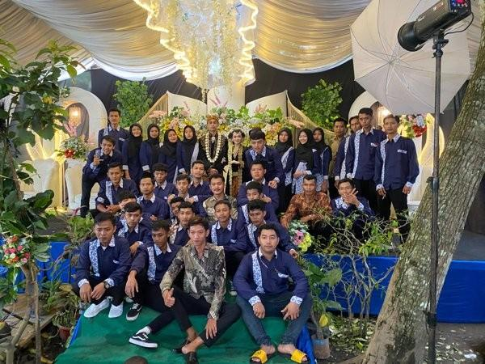

Kegiatan Kami
Berikut adalah beberapa dokumentasi kegiatan yang telah dilaksanakan oleh Karang Taruna BARET:

Partisipasi di Acara Pernikahan Warga
Anggota Karang Taruna hadir dalam acara pernikahan warga sebagai bentuk dukungan dan kekompakan sosial.